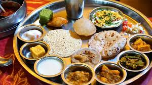

indian food
Indian food is different from rest of the world not only in taste but also in cooking methods. It reflects a perfect blend of various cultures and ages. Just like Indian culture, food in India has also been influenced by various civilizations, which have contributed their share in its overall development and the present form. Foods of India are better known for its spiciness. Throughout India, be it North India or South India, spices are used generously in food. But one must not forget that every single spice used in Indian dishes carries some or the other nutritional as well as medicinal properties. Food in the north India, to begin with, Kashmiri cuisines reflect strong Central Asian influences. In Kashmir, mostly all the dishes are prepared around the main course of rice found abundantly in the beautiful valley. Another delicious item cooked here is the ‘Saag‘ that is prepared with a green leafy vegetable known as the ‘Hak‘.